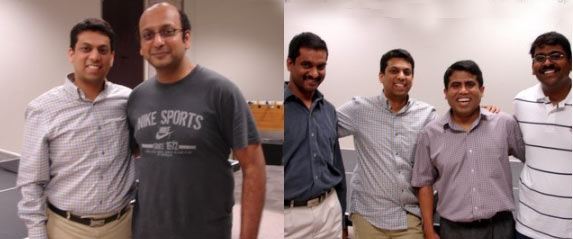
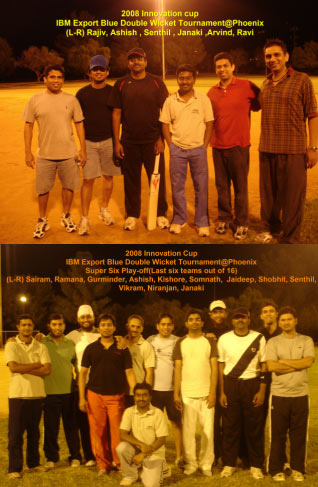
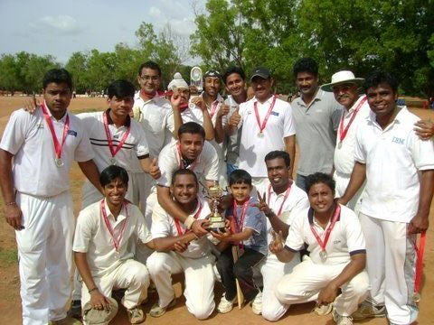
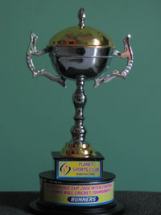

Man of the Match
This is to inform you all, that Madhav Vemuri, Business Analyst, is part of Hyderabad IBM Cricket Team and has won the Man of the Match Award in 'SBH Corporate Tournament ' Quarter Finals match that was held on 1st November, 2008.
In a nail-biting finish, IBM beat UBS by 1 wicket in the 'SBH Corporate Tournament ' Quarter Finals match that was held on the 1st of November, 2008.
In a low scoring, but intensely fought match, IBM team held its nerve till the last over to clinch a thrilling victory over UBS. Abdul and Girish batted sensibly during the last overs and stood between UBS and victory. They kept their cool and ensured IBM got the last 13 runs required for a victory.
Batting first UBS made 117 for 7 in 20 overs.
IBM made 121 for 9 wickets in 19.2 overs.
The Match
IBM V/s UBS
Quarter Finals Match
1st November, 2008 -- 1.00 pm, @ Loyola Grounds, Bolarum
UBS Batting:
Having won the toss, UBS decided to bat first. IBM opening fast bowlers, Girish Velchal and Sai Krishna, started the bowling spells for IBM and bowled very intelligently. Sai Krishna gave IBM the breakthrough in his very first over. However, UBS team quickly recovered from this early shock and started to score runs briskly and quickly. Momentum was slowly shifting towards UBS as their score stood at 75 runs for 1 wicket from 12 overs. Uday R Pothumanchi deliberated with the team and made some good bowling and fielding changes. Introduced Madhava Vemuri into the bowling attack, which yielded results immediately. Madhava Vemuri got rid of the both the settled UBS batsmen in one over. He also picked up two more crucial wickets in his next overs to ensure that UBS top order batsmen are all back in the pavilion. Goverdhan and Abdul Mohammed bowled a good spell in the middle of the innings. Sai was brought back into the attack in the last over and he immediately picked up two quick wickets.
UBS team could score only 42 runs in the last 8 overs is a testimony to the fact that IBM bowlers clinched back the momentum from UBS and ensured match is evenly poised.
IBM Batting:
IBM team started the chase in a perfect manner. Prabhakar Pogaku and Ramakrishna started scoring quickly right from the word go and the score raced to 30 runs in 4 overs. Prabhakar Pogaku made a quickfire 15 runs before losing his wicket. Khalid Joined Venkateswara R Putani and consolidated the partnership for the third wicket , Venkateswara R Putani was out @ IBM score of 85.
However, IBM started losing wickets quite regularly, even though, the asking rate and runs required were quite within the reach. Uday played intelligently but was unlucky enough to be given out caught behind. IBM lost 4 wickets in span of 20 runs. However, Abdul Mohammed showed that he has a cool head over his shoulders, by playing a sensible innings well supported by Girish Velchal and ensured IBM reached home safely with a WIN.
Highlights of IBM Batting
Runs:
Khalid 22
Ramakrishna 18
Prabhakar Pogaku 15
Venkateshwara R Putani 12
Abdul 12 (not out)
Girish 5 (not out)
Highlights of IBM Bowling
Wickets:
Madhava Vemuri 4 for 28 runs in 4 overs
Sai 3 for 20 runs in 4 overs
Girish 0 for 12 runs in 4 overs
Man of the Match for capturing 4 crucial wickets of UBS top order batsmen :
Madhava Vemuri
4 wickets for 28 runs.
By Prabhakar Pogaku
Export Blue Sports Event
The 2008 IBM Export Blue Table Tennis Tournament Phoenix (April � May 2008) was a huge success with good numbers of participants taking part and playing breadth taking table tennis. The tournament kick started with Sanjay Bhargava, Account executive picking up the draw for singles and Doubles.
The singles Group stage matches witnessed tough battle as the five players from four groups fought for top two positions in each group. The top two players from each group qualified for Knock out stages which started with quarter finals, semi finals and the mega finals. In the first semi-final, Sudhanshu won a closely contested match against Ramana by 2 sets to 1. Arvind won comfortably in straight sets in second semi-final match against Virender.
In the mouth watering mega finals it was 2007 runner-up Sudanshu who won a close match against Arvind to win the 2008 Singles championship.
Meanwhile, the doubles group stage started as well with four teams from two groups fighting it hard for semi-final slot.
In the first semi-final Blue Lotus (Arvind, Rajiv) won easily humbling Chana Masala (Ramana, Shobhit). Top Spinners (Senthil, Srihari) defeated Balls of Fury (Manish, Balu) in the second semi-finals.
The finals was one of the close contests in the entire tournament as Blue Lotus managed to held their nerve to come back from behind to take the decider set by 21-18 and wining the 2008 Doubles championship final match. Top Spinners finished as Runners-up.
Missed whole lot of action packed tournament. No worries, the entire tournament archives (Photos, Scores) are posted at the following URL: http://www.box.net/shared/q26t0qdi8k

2008 Innovation Cup - IBM Export Blue Double Wicket Cricket Tournament
The table tennis fever was soon followed by cricket tsunami that rocked Phoenix during the month of October 2008.
The 2008 Innovation cup had an interesting Double-Wicket format. Sixteen teams participated in the tournament and top two teams from each of three groups (Alpha, Beta and Gamma) qualified for Super-six. After 88 overs, 13 towering sixes, 25 boundaries and 30 wickets three teams finished at top. The entire tournament results (Scores, Photos, Statistics) can be located at http://www.box.net/shared/z2xgypylb6
Winner: Niranjan Dravid and Vikram Tandon
1st Runner-up: Raman Murthy and Sairam Chandrasekhar
2nd Runner-up: Venkata J Gaddam and Ahsish Bhave
Top All-Rounder:
Niranjan Dravid
Sairam Chandrasekhar
Senthilvelan Jayachandran
Kishore Bojedla
Top Batsman:
Ashish Bhave
Top Bowlers:
Jaideep Talekar
Venkata J Gaddam

By Senthilvelan Jayachandran
Plaspo


|